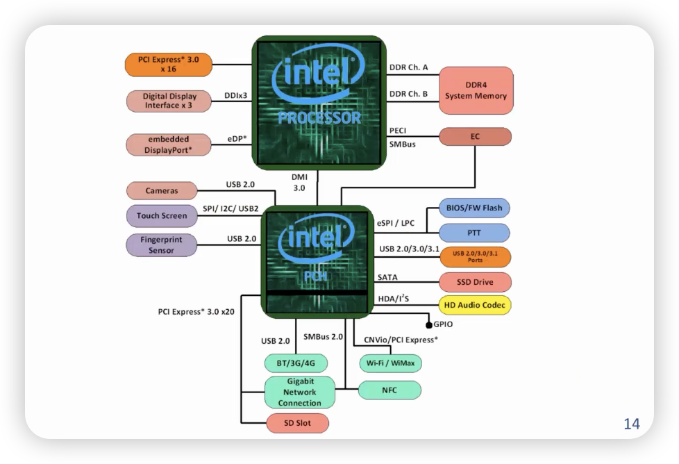

总线
- 总线把很多个外设连接到CPU上
- 注意Main memory也在外面
- 可扩展性：总线上可以挂多少个设备？
- 可恢复性：热插拔
bus¶
- 总线：一组导线，多个设备共享的通道
- Processor和Memory之间的是内存总线
- 连接外部的总线是I/O总线
使用总线的好处¶
- 解决外部设备“杂”的问题
- 容易增添新的设备
- 使用相同总线标准的外设容易在不同计算机间兼容
- 降低成本
- 总线可供多个设备共享
- 简化设计
总线的不足¶
- 容易成为信息通道的瓶颈
- 总线带宽（Bandwidth）限制了整条总线的吞吐量
- 总线的最高速度主要由下列因素决定：
- 总线长度
- 总线负载的设备数
- 负载设备的特性
- 延迟差异过大？
- 数据传输率差异过大？
单总线计算机：主板总线¶
- 使用一条总线：
- 处理器和主存储器之间通信
- 主存储器和I/O设备之间通信
- 有点：简单、成本低
- 缺点：速度慢，总线将成为系统瓶颈
双总线系统¶
- 输入/输出总线通过适配器和处理器-主存总线相连
- 处理器-主存总线：主要用于处理器和主存储器之间的通信
- 输入/输出总线：为输入/输出设备提供信息
- Apple Macintosh II
三总线¶
- 根据传输速度进行再次分类
- 大大减少处理器-主存总线负载
- 现代PC基本采用的结构
传统的x86计算机的总线¶
新x86系统的总线¶

- PCH：Peripheral Control Hub （外设控制）
总线类型¶
- 处理器-主存总线（专用）
- 传输距离短、速度高
- 主存专用，保证主存-处理器之间的高带宽
- 直接和处理器连接
- 优化处理使之适应Cache块传送
- 输入/输出总线（行业标准）
- 通常距离较长，速度较慢
- 需要适应多种输入/输出设备
- 和处理器-主存总线通过桥连接（或通过主板总线）
- 主板总线（行业标准或专门设计）
- 主板：连接各部件器件的底盘
- 应允许处理器、主存储器和输入/输出设备互联
- 应有价格优势：所有组件连接在一条总线上
总线的一般组成¶
- 控制线：
- 总线请求信号及数据接收信号
- 指明数据线上传输信息的类型
- 数据线：在源设备和目标设备间传送信息
- 数据和地址
- 复杂的命令
- 地址线和数据线复用
总线标准¶
- 标准可以影响性价比、可靠性等
总线结构¶
总线相关概念¶
- 总线主设备：有能力控制总线，发起总线事物
- 总线从设备：响应主设备请求
- 总线通信协议：定义总线传输中的事件顺序和时序要求
- 异步总线传输：控制信号（请求，应答）作为总控信号
- 同步总线传输：使用共同的时钟信号
主设备和从设备¶
- 总线事务包括两个部分：
- 发起命令（和地址）
- 传输数据
- 主设备是总线事务的发起者：
- 发出命令（和地址）
- 从设备是总线事务的响应者：
- 若主设备发出的是读命令，则将数据发送到主设备
- 否则，接收主设备发来的写入数据
仲裁：获得总线使用权¶
- 可通过主-从设备的安排来避免冲突
- 只允许总线主设备发起总线事务，控制所有总线请求
- 从设备响应主设备的读写请求
- 最简单的设计：
- 处理器作为唯一的总线主设备
- 所有总线请求均由处理器控制
- 主要缺点：处理器被卷入到每一个总线事务中
多个总线主设备¶
- 总线仲裁的基本要求：
- 某总线主设备使用总线前应发出总线请求
- 只有得到授权后，主设备才能使用总线
- 使用完毕后，主设备应通知仲裁器
- 总线仲裁器在以下两方面取得平衡
- 优先权：优先级高的设备应该得到优先服务
- 公平性：最低优先级的设备也不能永远被排除在总线服务之外
- 总线仲裁方式
- 集中仲裁和分布仲裁
- 集中仲裁：例如交通警察在路口指挥交通
- 分布仲裁：路口没有交通警察，所有车辆先停下，确认其他方向没有来车后通行
- 按优先级仲裁或轮询仲裁
- 优先级仲裁：例如，救护车在道路上有高优先级
- 集中仲裁和分布仲裁
总线仲裁方式¶
菊连仲裁¶
- 优点：简单
- 缺点：
- 无法保证公平性
- 总线授权信号的逐级传递限制了总线的速度
集中平行仲裁¶
- 用户几乎所有处理器-主存总线和一些高速输入/输出总线
同步和异步总线¶
- 同步总线：
- 控制线中包含一根时钟信号线
- 传输协议根据时钟信号制定：
- 例如：主设备提出总线请求后5个时钟周期，可以获得能否使用总线的信号
- 优点：逻辑简单、高速
- 缺点：
- 总线上所有设备必须按时钟频率工作
- 为防止时钟信号扭曲，高速工作时，总线距离必须足够短
- 异步总线：
- 不使用统一的时钟
- 可适应设备的不同速度
- 不用担心时钟信号扭曲，距离课较长
- 使用握手协议
简单的同步协议¶
典型的异步协议¶
增加总线带宽¶
\(带宽=频率\times总线位宽\)
- 增加总线的宽度（位宽）
- 可增加每个周期传送数据的量
- 提高了成本
- 分别设置数据总线和地址总线
- 可同时传送数据和地址
- 提高了成本
- 采用成组传送方式
- 一个总线事务传送多个数据
- 每次只需要在开始的时候传送一个地址
- 直到数据传送完毕才释放总线
- 代价
- 复杂度提高
- 延长后续总线请求的等待时间
- 多主设备总线提高事务数量
- 仲裁重叠
- 在当前事务时，为下一总线事务进行仲裁（流水）
- 总线占用
- 在没有其他主设备请求总线的情况下，某主设备一直占用总线，完成多个总线事务
- 地址、数据传送重叠（流水）
- 仲裁重叠
PCI总线¶
特点：
- 所有信号在时钟正边沿采样
- 集中平行仲裁
- 和上一事物重叠
- 所有事务可无限制成组传送
- 地址段起始于FRAME#信号有效
- 第一时钟周期主设备发出CMD和Address
- 第一周期是CMD，后面都是BE#
- 数据传送
- 当主设备准备好传输数据，主设备发出IRDY#信号
- 从设备准备好传输数据，发出TRDY#信号
- 上述两个信号均有效时的时钟上升沿开始传送数据
- 主设备准备结束数据传送时，将FRAME#信号失效
PCI的其他问题¶
- 中断：
- 用于支持控制I/O设备
- Cache一致性：
- 用于支持I/O和多处理器
- 加锁：
- 支持分时操作，I/O和多处理器
- 可配置地址空间
- 并行和串行，如果频率一样，并行比串行快
作者: